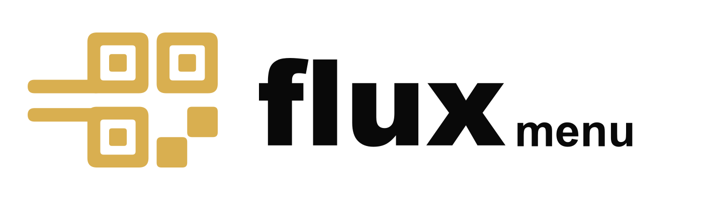
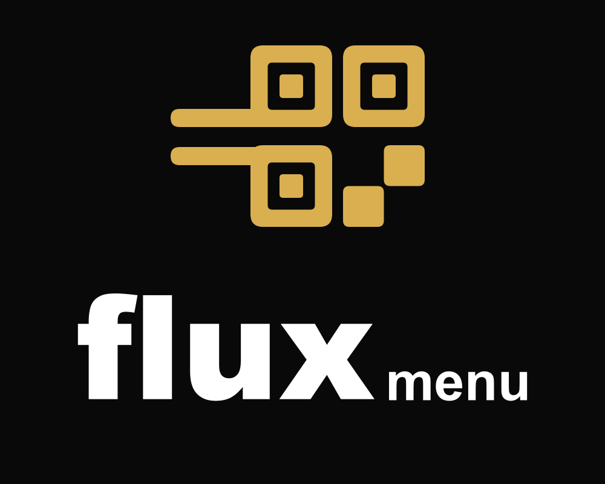
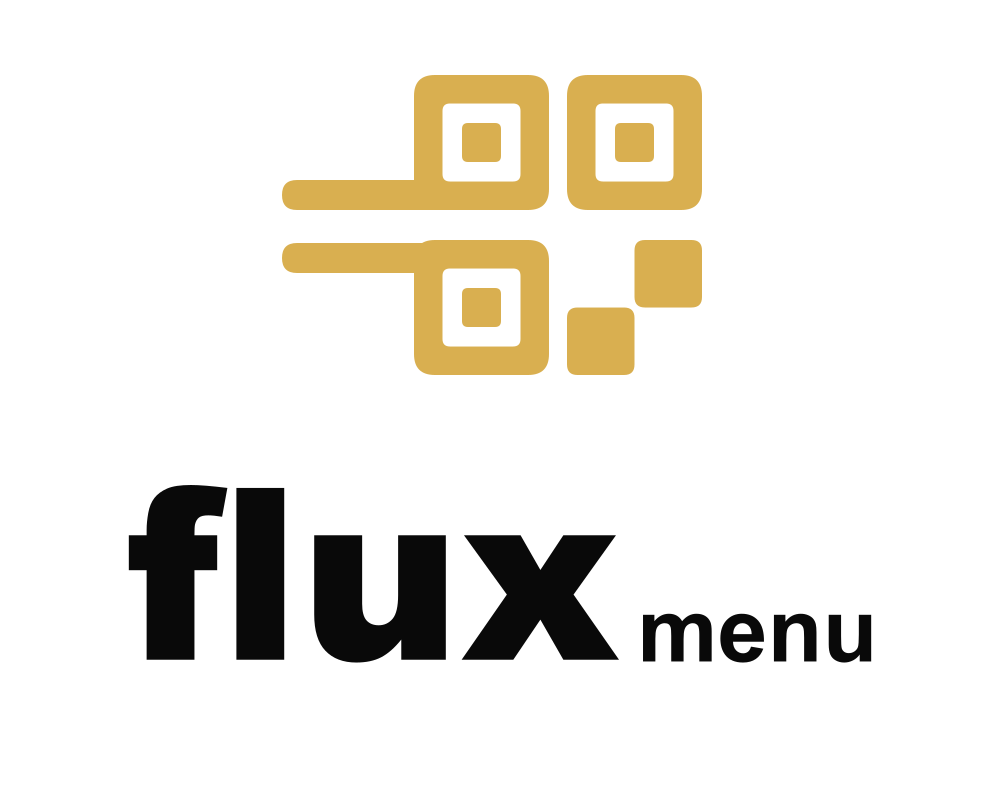
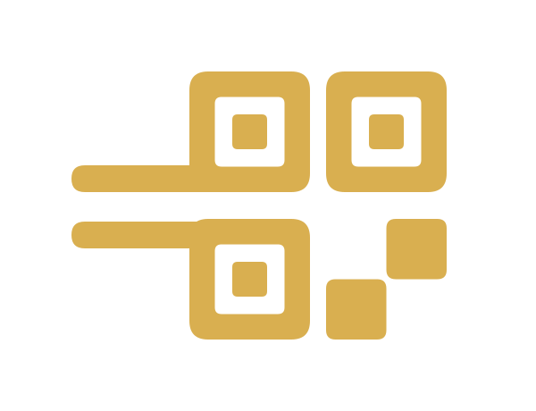

Flux Menu · identidade visual
Preto, branco e dourado · arquivos SVG vetoriais
horizontal · escuro
horizontal · claro

vertical · escuro

vertical · claro

simbolo · escuro
simbolo · claro

mascote-campainha · escuro
mascote-campainha · claro